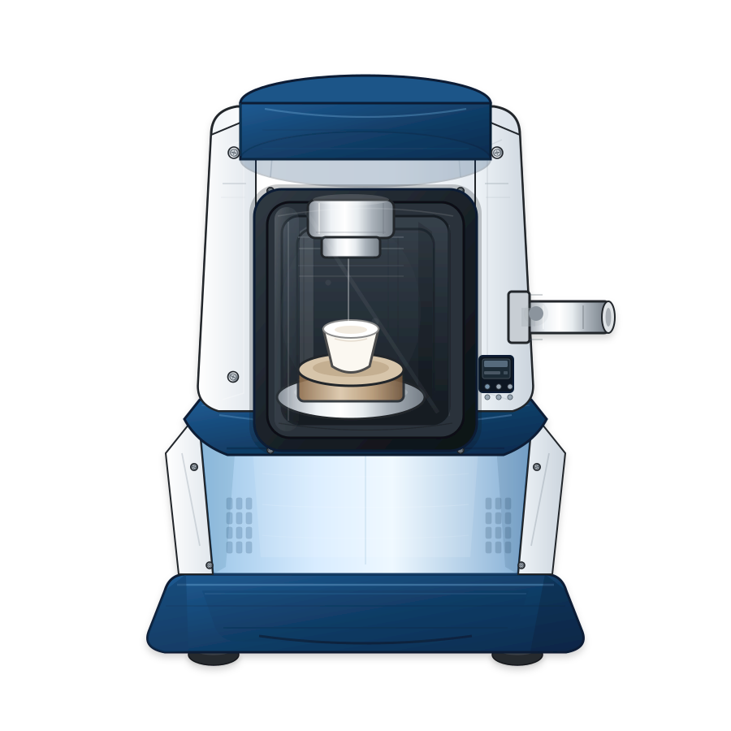
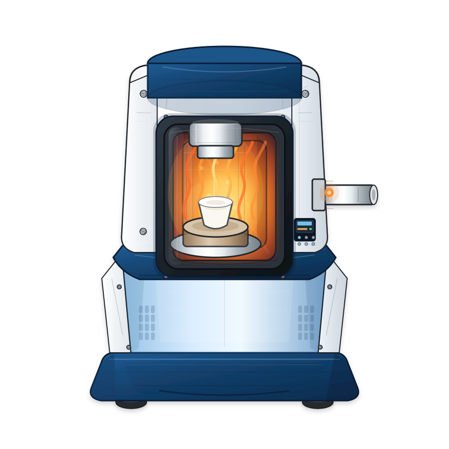
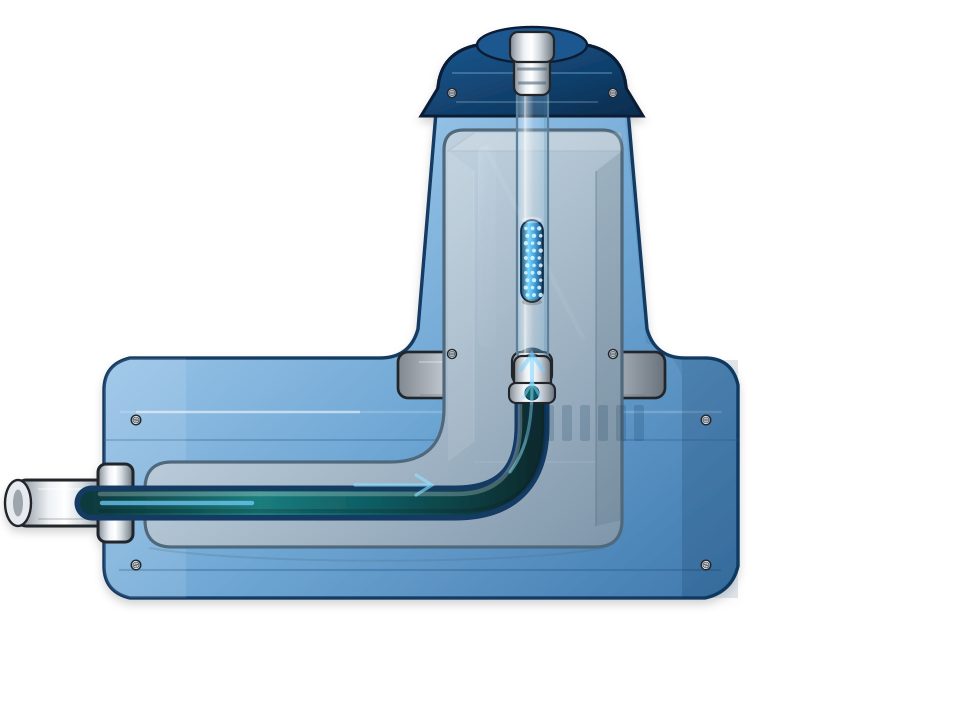
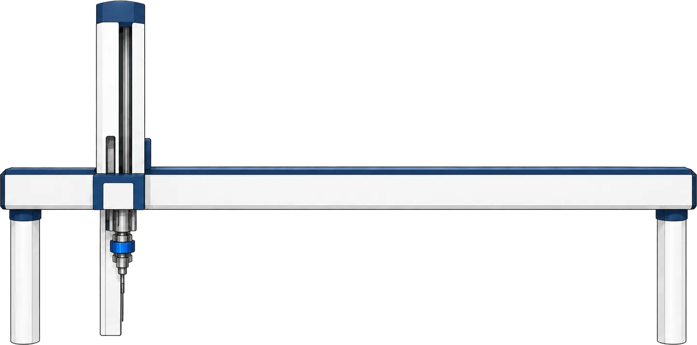
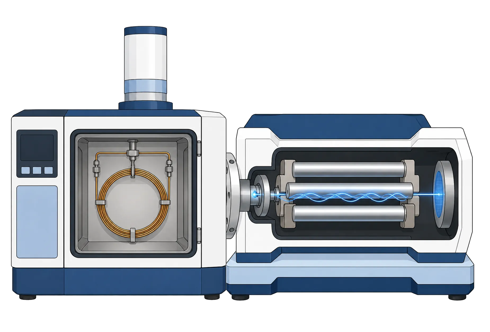

Recent Advances and Persistent Challenges in Microplastics Analysis Using TED-GC-MS
Gerrit Renner, Rajshree Jeewon, Torsten C. Schmidt
University of Duisburg-Essen, Instrumental Analytical Chemistry, TC Schmidt Lab,
gerrit.renner@uni-due.de,
https://elearning.odea-project.org/renner_workshop_microplastics.html
University of Duisburg-Essen, Instrumental Analytical Chemistry, TC Schmidt Lab,
gerrit.renner@uni-due.de,
https://elearning.odea-project.org/renner_workshop_microplastics.html
Analytical Process for Microplastics Analysis Using TED-GC-MS










Why Measurement Time Becomes a Bottleneck
TGA Heating Rate: Reproducibility Study
Credit
Rajshree Jeewon
Master Thesis Data The heating rate affects not only runtime, but also the reproducibility of the SBR marker response. The minimum of Sx0 supports the optimized TGA program. Rajshree Jeewon
Master Thesis, Environmental Toxicology
University of Duisburg-Essen, IAC, 2026
Master Thesis Data The heating rate affects not only runtime, but also the reproducibility of the SBR marker response. The minimum of Sx0 supports the optimized TGA program. Rajshree Jeewon
Master Thesis, Environmental Toxicology
University of Duisburg-Essen, IAC, 2026
However , Measurement Time Still Remains a Challenge
For a 5-point calibration we need: Std 1, Blank, Std 2, Blank, ... , Std 5, Blank.
i.e., more than 9 hours
Running Regression
Sample Result Stability Across Neighboring Calibration Sessions
Pre-treatment and post-treatment samples are each evaluated once with the local session calibration and once with the mean result from 11 neighboring calibration windows to assess robustness across nearby measurement sessions.
Matrix Effects can Change Marker Signals
Robust & Automated Peak Detection Required
PP marker, m/z 111
Retention-time shifts and altered peak shapes can affect marker interpretation.
PET marker, m/z 105
Matrix-dependent signals can appear as additional apparent marker structures.
qPeaks: A Linear Regression-Based Asymmetric Peak Model
External article preview
qPeaks: A Linear Regression-Based Asymmetric Peak Model for Parameter-Free Automatized Detection and Characterization of Chromatographic Peaks in Non-Target Screening Data
Analytical Chemistry, 96(18), 7120-7129, 2024
This article introduces qPeaks, a linear regression-based asymmetric peak model for automated chromatographic peak detection and characterization in non-target screening. It is directly relevant here because it connects transformed peak models with efficient parameter estimation and uncertainty-aware peak analysis.
Article figure preview

Click the image to open a large preview.
This slide uses a local preview card style with direct links instead of embedding the publisher page.
Piecewise parabola peak model
Peak view
Log y-axis
Merged peak
Separate parabolas
Thank you for your attention!

Gerrit Renner, Rajshree Jeewon, Torsten C. Schmidt
University of Duisburg-Essen, Instrumental Analytical Chemistry, TC Schmidt Lab,
gerrit.renner@uni-due.de,
https://elearning.odea-project.org/renner_workshop_microplastics.html
University of Duisburg-Essen, Instrumental Analytical Chemistry, TC Schmidt Lab,
gerrit.renner@uni-due.de,
https://elearning.odea-project.org/renner_workshop_microplastics.html